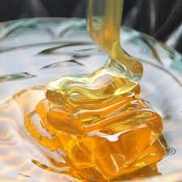

Med
Med je gusta slatka sirupasta materija, proizvod medonosnih pčela (lat. Apis mellifera ili Apis mellifica) dobijen od sabranih voćnih i drugih sokova prerađenih u pčelinjem želucu.Izlučeni sok odložen poklopljenom saću hemijskim reakcijama pretvara se u med. Prema vrstama biljaka od koje se dobija, med se razvrstava u monoflorni (med dobijen od samo jedne vrste biljke, na primer, bagrema) i poliflorni med (med dobijen sakupljanjem nektara sa više vrsta biljaka, kao na primer, livadski med, šumski i dr.). Med je najvažniji pčelinji proizvod, poznat u ljudskoj ishrani još od praistorijskog doba.Po definiciji, med je čisti proizvod u kome nema dodataka bilo koje druge supstance.
Med dobija svoju slatkoću od monosaharida fruktoze i glukoze, i ima istu relativnu slatkoću kao i granulirani šećer. On ima atraktivna hemijska svojstva za pečenje i osobeni ukus zbog čega neki ljudi preferiraju med u onosu na šećer i druge zaslađivače. Većina mikroorganizama ne raste u medu, tako da se zapečaćeni med ne kvari, čak ni nakon nekoliko hiljada godina.Međutim, med ponekad sadrži dormantne endospore bakterije Clostridium botulinum, što može da bude opasno za bebe, jer to može da dovede do botulizma.
Sama reč med potiče od praindoevropskog medhu što se u staroslovenskom transkriptovalo kao медъ, u litvanskom medus, u engleskom mead (medovina), u sanskritu madhu, u grčkom μεθυ (Vino), a u staroirskom mid. Tako su nastali izrazi u ostalim indoevropskim jezicima, a ponekad je naziv dobijen sličnošću s nečim drugim (u germanskim jezicima označava nešto zlatnožuto) ili pak zamenom značenja.
Med je mešavine od preko 70 raznovrsnih sastojaka. Tačan sastav meda zavisi od mešavine cveća i bilja čiji nektar pčele skupljaju. Preko 80 % meda čine ugljeni hidrati. Najzastupljeniji su fruktoza i glukoza sa preko 60 %. Nešto manje od jedne petine je voda, koje najčešće ima oko 17 %, dok je saharoza (stoni šećer) zastupljena do 9 %.
| Tipični sastav meda | |
| Jedinjenje | Količina |
| Fruktoza | 38% |
| Glukoza | 31% |
| Saharoza | 10% |
| Voda | 17% |
| Pepeo | 0,17% |
| Ostalo | 3.83% |